Analiza rješenja · JOI Spring Camp 2024 · Dan 3
Toranj
O ovom članku
Tekst je prijevod službene japanske prezentacije rješenja, preoblikovan u članak. Slajdovi su ugrađeni kao slike; natpis pod svakim slajdom je prijevod teksta na njemu. Dijelovi označeni kao trenerska napomena nisu u izvornoj prezentaciji — dodani su da popune korake koje slajdovi preskaču ili samo skiciraju.
Slajdovi
Zadatak
izvorni slajdovi 1–3
-
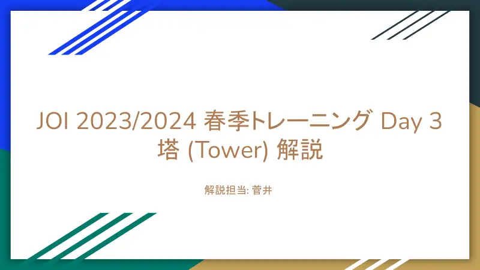
1Naslov; analiza: Sugai. -
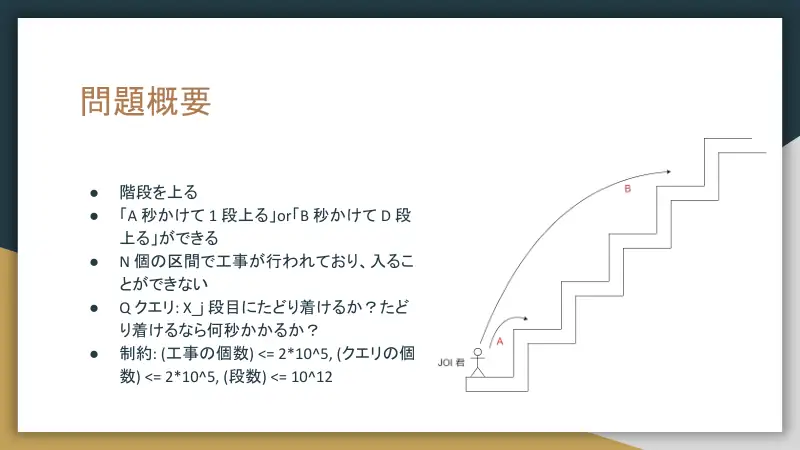
2Uspon stubama: $A$ s za 1 stubu ili $B$ s za $D$ stuba; $N$ zabranjenih intervala; $Q$ upita: može li se do $X_j$ i za koliko. -
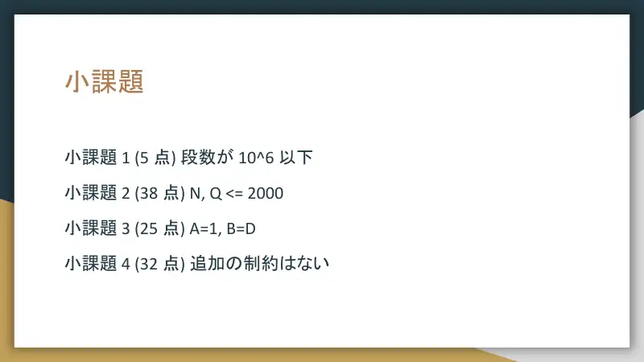
3Podzadaci.
← → tipke ili klik na sliku
Podzadaci 1–2 43 boda
Koraci algoritma
DP i mreža
izvorni slajdovi 4–9
-
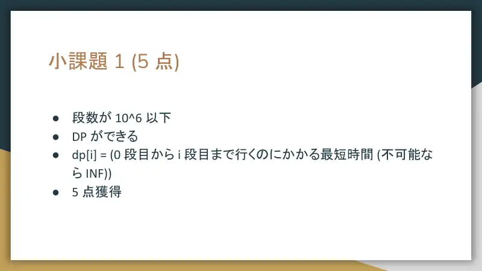
4Stube $\le10^6$: $\mathit{dp}[i]$ = najkraće vrijeme do stube $i$. -
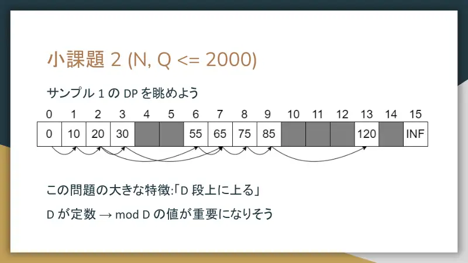
5Pogledaj DP za sample 1; $D$ je konstanta → važan je ostatak mod $D$. -
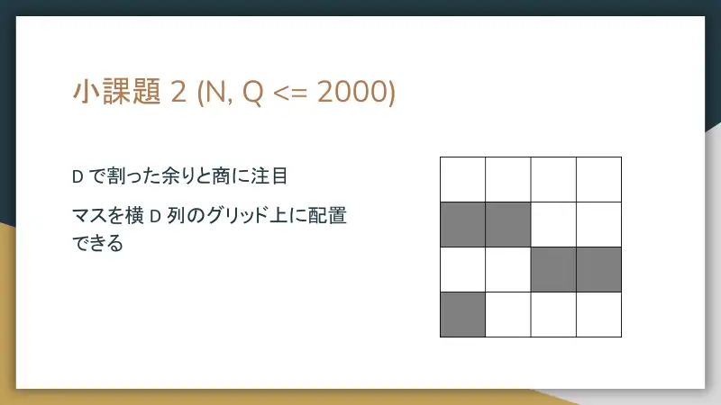
6Kvocijent i ostatak: ćelije u mreži s $D$ stupaca. -
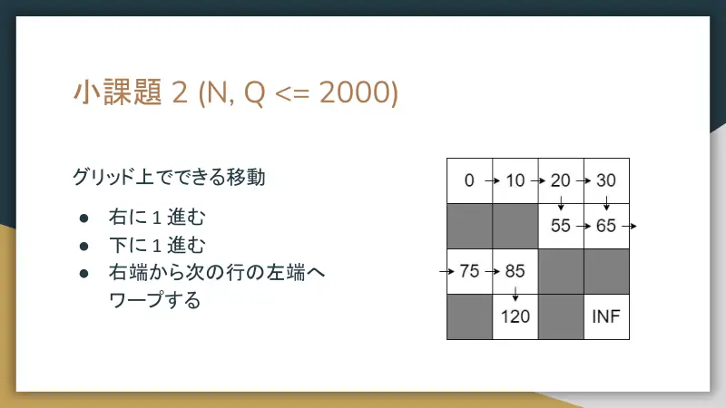
7Potezi: desno 1, dolje 1, prijelaz s desnog kraja na lijevi kraj sljedećeg reda. -
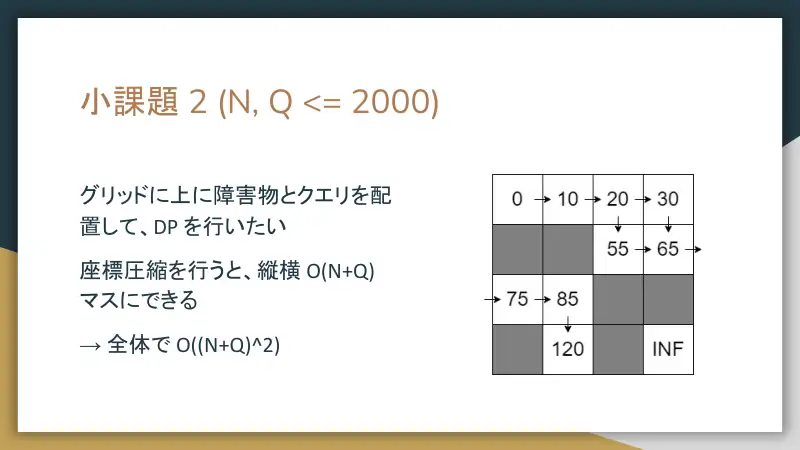
8Postavi gradilišta i upite u mrežu, kompresija → $O(N+Q)$ redaka i stupaca, DP $O((N+Q)^2)$. -
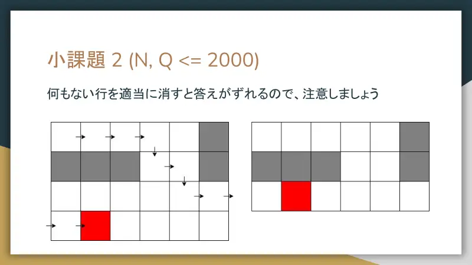
9Oprez: brisanje praznih redaka mijenja odgovor.
← → tipke ili klik na sliku
Podzadatak 3 25 bodova
Koraci algoritma
Samo dostižnost
izvorni slajdovi 10–17
-
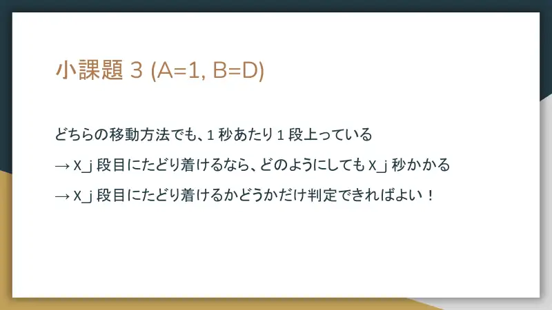
10$A=1$, $B=D$: oba poteza penju 1 stubu/s → svaki put do $X_j$ traje $X_j$ s; treba samo dostižnost. -
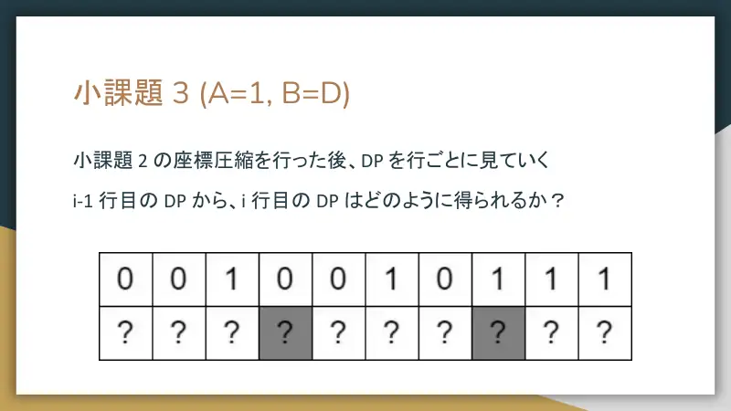
11Nakon kompresije DP po redovima: kako iz reda $i-1$ dobiti red $i$? -
12① kopiraj. -
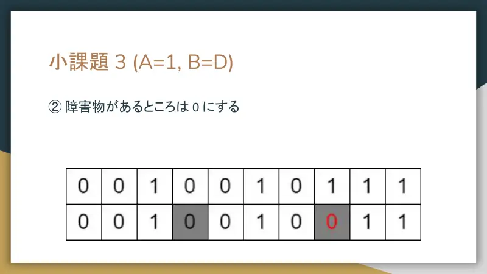
13② gradilišta → 0. -
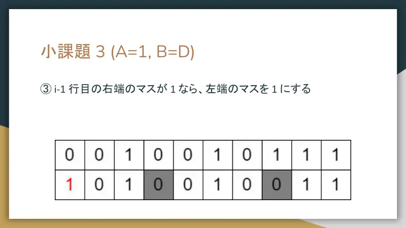
14③ ako je desni kraj reda $i-1$ jedinica, lijevi kraj reda $i$ postaje 1. -
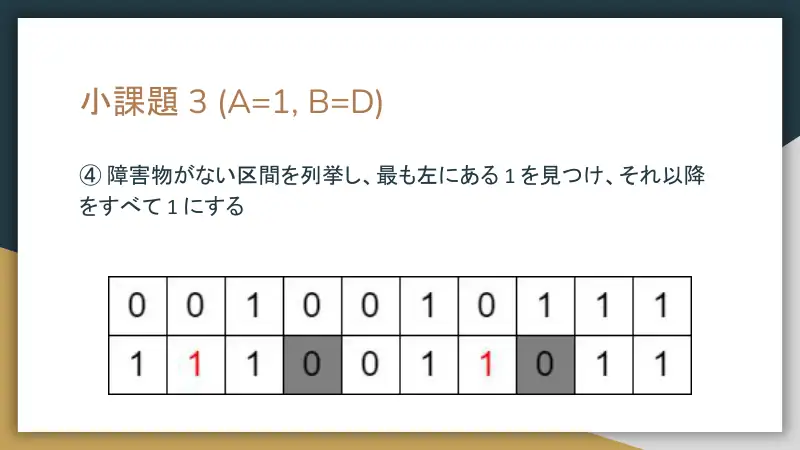
15④ po intervalima bez gradilišta nađi najljeviju jedinicu i sve iza postavi na 1. -
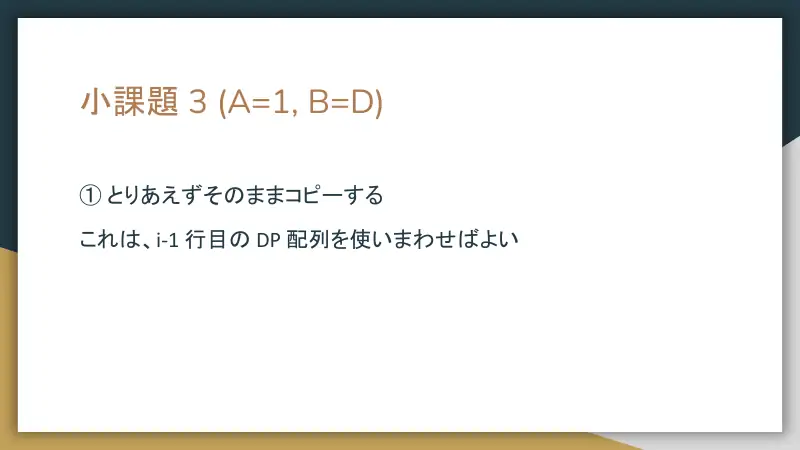
16① = ponovno koristi isti niz. -
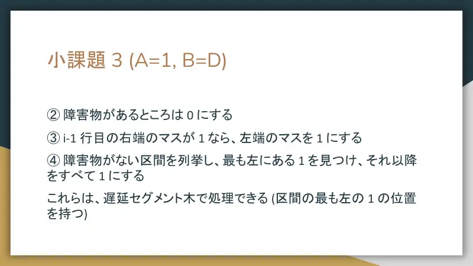
17②–④ lijenim segmentnim stablom (čuva poziciju najljevije jedinice u intervalu).
← → tipke ili klik na sliku
Puno rješenje 32 boda
Koraci algoritma
Pomak za konstantu i oblik reda
izvorni slajdovi 18–22
-
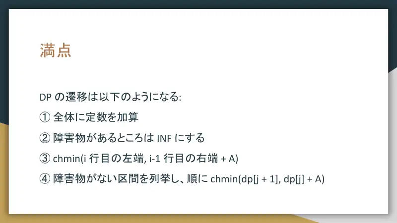
18Prijelazi: ① svima dodaj konstantu, ② gradilišta → $\infty$, ③ $\mathrm{chmin}$(lijevi kraj reda $i$, desni kraj reda $i-1$ $+A$), ④ po intervalima $\mathrm{chmin}(dp[j+1],dp[j]+A)$. -
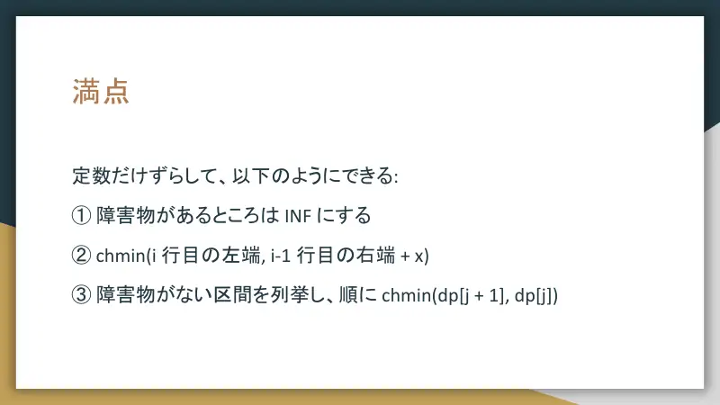
19Pomakom za konstante: ① gradilišta → $\infty$, ② $\mathrm{chmin}$(lijevi kraj, desni kraj prethodnog $+x$), ③ po intervalima $\mathrm{chmin}(dp[j+1],dp[j])$. -
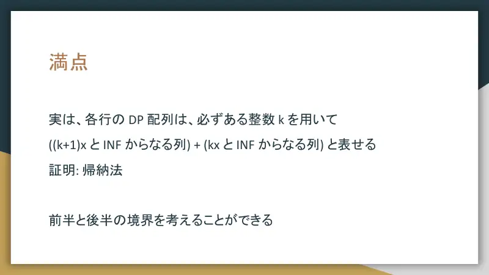
20Svaki red je oblika (niz od $(k+1)x$ i $\infty$) + (niz od $kx$ i $\infty$). Dokaz indukcijom promatranjem granice. -
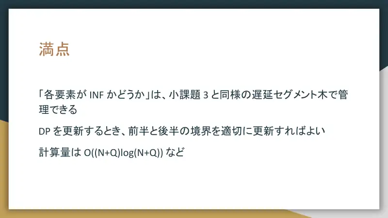
21„Je li $\infty$” drži isto lijeno segmentno stablo kao u podzadatku 3; pri ažuriranju pomakni granicu. $O((N+Q)\log(N+Q))$. -
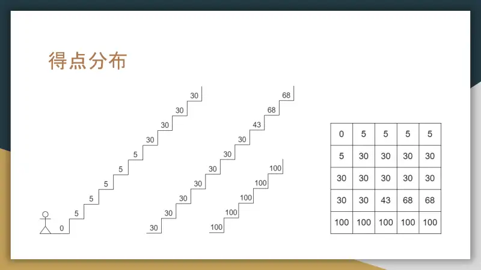
22Raspodjela bodova.
← → tipke ili klik na sliku
Sažetak
- Mreža širine $D$ s potezima desno/dolje/prijelaz; kompresija na $O(N+Q)$.
- $f=\mathit{dp}-Bq-Ar$ mijenja se samo pri prijelazu ($x=AD-B$); red je uvijek $(k+1)x/\infty$ prefiks + $kx/\infty$ sufiks.
- Lijeno segmentno stablo za dostižnost + $k$ i granica: $O((N+Q)\log(N+Q))$.